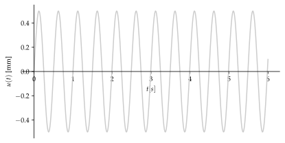

%run style_and_packages.ipynb10 Beispiel: Balken ohne Tilger{#sec-ems_untilg}
10.1 Aufgabenstellung
Ein einfacher Balken mit einer Einzelmasse, welcher in dieser Aufgabe ohne Tilger ausgestattet ist, ist in Abbildung 10.1 dargestellt. Die Masse erfährt eine dynamische Einwirkung durch die Funktion \(F(t)\). Das Beispiel wird in ?sec-tilger weitergeführt.
Gesucht:
- Maximale dynamische Verformung mittels stationärer Lösung
- Maximale dynamische Beschleunigung mittels stationärer Lösung
Gegeben:
E, I, M_H, zeta, L, F_0, omega, delta_11, delta_12 = sp.symbols('E, I, M_H, zeta, L , F_0, omega, delta_11, delta_12')
t = sp.symbols('t')params = {E: 200*10**3 *unit.N/unit.mm**2,
I:2*10**8*unit.mm**4,
M_H:2000*unit.N*unit.second**2/unit.m,
L:5*unit.m,
F_0:0.8*10**3*unit.N,
omega:12.6/unit.second,
zeta:0.0
}
render.dict_to_table(params)| \(E = \frac{200000 \text{N}}{\text{mm}^{2}}\) | \(F_{0} = 800.0 \text{N}\) |
| \(I = 200000000 \text{mm}^{4}\) | \(L = 5 \text{m}\) |
| \(M_{H} = \frac{2000 \text{N} \text{s}^{2}}{\text{m}}\) | \(\omega = \frac{12.6}{\text{s}}\) |
| \(\zeta = 0.0\) |
\[ F(t) = F_0 \cdot \sin(\omega\cdot t) = 0.8 \text{kN} \cdot (12.6 \frac{\text{rad}}{\text{s}}\cdot t) \]
10.2 Musterlösung
F_t = F_0 * sp.sin(omega*t)10.2.1 Steifigkeit \(k\)
Zuerst wird die Steifigkeit des Systems ermittelt, für einen Einmassenschwinger entspricht diese der Biegesteifigkeit des Balkens.
k_H = 48 * (E*I) / (2*L)**3
render.eq_display('k_H', k_H,
'k_H',k_H.subs(params).simplify().evalf(3))\[\begin{equation}k_{H} = \frac{6 E I}{L^{3}}\end{equation}\]
\[\begin{equation}k_{H} = \frac{1.92 \cdot 10^{6} \text{N}}{\text{m}}\end{equation}\]
10.2.2 Eigenkreisfrequenz \(\omega\)
Die Eigenkreisfrequenz kann mit der bekannten Formel ermittelt werden:
omega_n = sp.sqrt(k_H / M_H)
render.eq_display('omega_n', "sqrt(k/m)",
'omega_n', omega_n,
'omega_n', omega_n.subs(params).simplify().evalf(3))\[\begin{equation}\omega_{n} = \sqrt{\frac{k}{m}}\end{equation}\]
\[\begin{equation}\omega_{n} = \sqrt{6} \sqrt{\frac{E I}{L^{3} M_{H}}}\end{equation}\]
\[\begin{equation}\omega_{n} = \frac{31.0}{\text{s}}\end{equation}\]
10.2.3 Vergrösserungsfaktor \(V(\omega)\)
Da lediglich die Stationäre Antwort von Interesse ist, kann mittels Vergrösserungsfaktor diese ermittelt werden. Der Verlauf entspricht der Anregungsfunktion. Die Amplitude definiert sich aus der statischen Deformation mit dem Vergrösserungsfaktor multipliziert.
V_omega = 1/(sp.sqrt((1-(omega/omega_n)**2)**2 + (2*zeta*(omega/omega_n))**2))
render.eq_display('V(omega)', '1/(sqrt((1-(omega/omega_n)**2)**2 + (2*zeta_*(omega/omega_n))**2))',
'V(omega)', V_omega.subs(params).simplify().evalf(3))\[\begin{equation}V{\left(\omega \right)} = \frac{1}{\sqrt{\frac{4 \omega^{2} \zeta_{}^{2}}{\omega_{n}^{2}} + \left(- \frac{\omega^{2}}{\omega_{n}^{2}} + 1\right)^{2}}}\end{equation}\]
\[\begin{equation}V{\left(\omega \right)} = 1.2\end{equation}\]
10.2.4 Stationäre Lösung
10.2.4.1 Statische Deformation
u_0 = F_0 / k_H
render.eq_display('u_0', 'F_0 / k_H',
'u_0', u_0,
'u_0', unit.convert_to(u_0.subs(params).simplify().evalf(4), unit.mm))\[\begin{equation}u_{0} = \frac{F_{0}}{k_{H}}\end{equation}\]
\[\begin{equation}u_{0} = \frac{F_{0} L^{3}}{6 E I}\end{equation}\]
\[\begin{equation}u_{0} = 0.4167 \text{mm}\end{equation}\]
10.2.4.2 Stationäre maximale Deformation
u_stat = u_0 * V_omega
render.eq_display('u_stat', 'u_0 * V(omega)',
'u_stat', u_stat,
'u_stat', unit.convert_to(u_stat.subs(params).simplify().evalf(3), unit.mm))\[\begin{equation}u_{stat} = u_{0} V{\left(\omega \right)}\end{equation}\]
\[\begin{equation}u_{stat} = \frac{F_{0} L^{3}}{6 E I \sqrt{\left(1 - \frac{L^{3} M_{H} \omega^{2}}{6 E I}\right)^{2} + \frac{2 L^{3} M_{H} \omega^{2} \zeta^{2}}{3 E I}}}\end{equation}\]
\[\begin{equation}u_{stat} = 0.499 \text{mm}\end{equation}\]
10.2.4.3 Stationäre maximale Beschleunigung
V_a_omega = omega**2 / omega_n**2 * V_omega
u_2_stat = F_0 / M_H * V_a_omega
render.eq_display('V_a(omega)', "omega**2 / omega_n**2 * V_omega",
'V_a(omega)', V_a_omega.subs(params).simplify().evalf(3),
'Derivative(u_stat,t,2)', u_2_stat.subs(params).simplify().evalf(3))\[\begin{equation}V_{a}{\left(\omega \right)} = \frac{V_{\omega} \omega^{2}}{\omega_{n}^{2}}\end{equation}\]
\[\begin{equation}V_{a}{\left(\omega \right)} = 0.198\end{equation}\]
\[\begin{equation}\frac{d^{2}}{d t^{2}} u_{stat} = \frac{0.0793 \text{m}}{\text{s}^{2}}\end{equation}\]
u_t = u_stat * sp.sin(omega*t)
params_plot = convert.param_value(params)
u_t_plot = u_t.subs(params_plot).subs(unit.second, 1)*1000
p_1 = sp.plot(u_t_plot, (t,0,6), adaptive=False, nb_of_points=500,
xlabel='$t [s]$',
ylabel='$u(t)$ [mm]',
size=(5.9,3),show=False, label='Stationärer Anteil', line_color='0.8')
p_1.show()